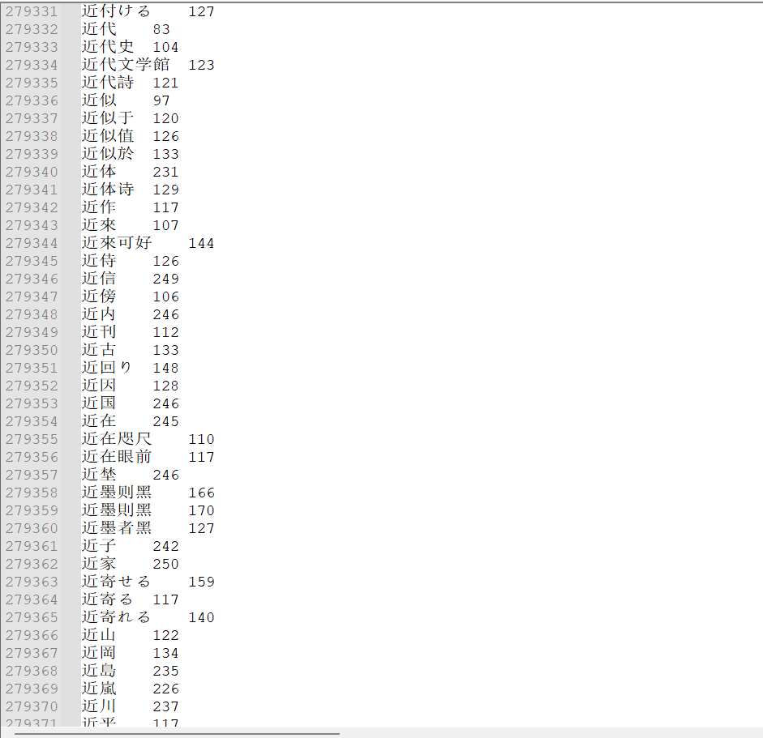

孙悟元
@wuyuandev
@hanawa_hinata 人工智能解决不了的，能工智人就可以。

日向花和 Hanawa Hinata
@hanawa_hinata
以前有一段时间学python的时候，意外发现浏览器支持分词：即有一段话，你鼠标双击这段话的时候，它会自动匹配一个词并选中它。我之前一直挺好奇chrome是如何实现的。
直到今天我翻了一下choromium源代码，发现了一个cjdict.txt：
https://t.co/Av2WhALdHj
🙂 高端的食材往往只需要最朴素的烹饪方式 https://t.co/hyW4zOZP1y